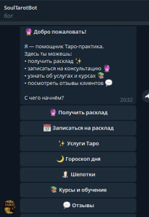
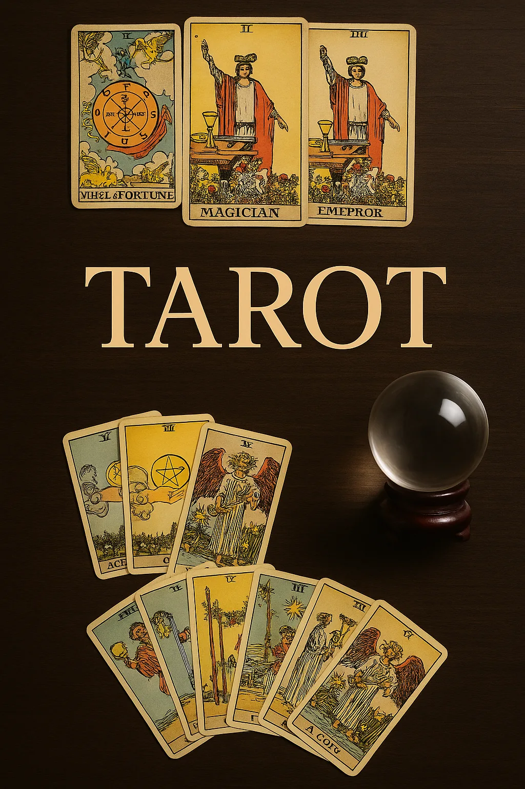

Консультации с Tarot-ботом
Архивное меню SoulTarotBot · Показ по договорённости · Актуальная доступность — в карточке Telegram-портфолио
В меню есть расклад, услуги и запись. В проверенном сценарии бот сохраняет три карты и учитывает их при следующем вопросе. Для консультации посетитель может оставить контакт.
В галерее показано историческое меню. Расклад в этом проекте — развлекательная практика для размышления.
Адрес бота этого проекта — @mySoulTarotBot. Доступность живого показа нужно уточнить у Василия.




Пример ответа ИИ
Автоматическая проверка: вопрос задан программно, ответ получен от YandexGPT Pro 5.1 через настоящий API. Это текстовый протокол, не снимок Telegram.